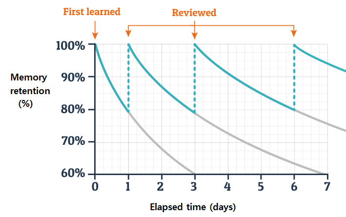

life is ever-lasting process of learning. We are always learning something new, facing new challenges. Every new day is a learning opporunity. We spend most of our life trying to learn but we never actually learn how to learn. So many hours have been wasted trying to reread a text, just to forget it a week later. Books have been highlighted red, just for it to fade away from our memory. In the end we convince ourselves that we are not meant for learning, we are not meant for education, and we give up on our ambitions. Today, a lot of research has been done about learning for it to tell us what works and what doesn't. it is about
Today, a lot of research has been done about learning for it to tell us what works and what doesn't. it is about time that we adopt these new efficient methods of learning and make learning problems a thing of the past. In this article, I will try to tell you how to be the best learner and unlock your full potential. A few minutes trying to adopt these new techniques into your life can save you years of fruitless and exhaustive learning.
Before we get into how to learn, let's first learn about our brain and how to use it to its full potential
There are essentially two modes of thinking: Focused mode (Consious thinking) and Diffused mode (Sub-conscious thinking).
Focused mode
Focused mode is when you are consciously giving your attention to the problem. For example: you trying to solve a maths problem during examination.
Diffused mode
Mode of thinking when you are not consiously trying to think about the problem. for example: walking, showering, running.
Being an expert at anything requires the use of both focused and diffused mode. When we are at focused mode, we have too narrowed vision to see anything beyond what we already know. We are unable to make new connections. Because of this we cannot get deeper into the subject. Our understanding becomes limited. Tackling this problem is easy. All we have to do is take a break. Do anything that relaxes you and do not think about the topic. Sub consciously, we will make different connections and when we go back to studying, we will have a new perspective which will provide us fresh insights. Learning this way has two major advantages. First, your don't get tired very easily as you are taking constant breaks. Second, you will have fresh and deep insights in the subject which increases your understanding of the topic. This makes it much more easier for you to retain the information.
What works and what doesn't?
We are all familiar with those long hours spent cramming the whole book few days before the examination. By the time, we are done with the examination, we are also done with the knowledge. By next day, we will have forgotten 50% of what we read and next week, 100% of it. Why put so much effort just to forget it? Examinations aren't about grades, it is about testing yourself on what you know and what you don't.
Rote learning is the most used learning technique in the world, not because it is the most effectve, but because it is the only way of learning we know. Highlighting and note taking are the "advanced" learning methods we use, but are they really the best learning strategy we have? The answer is , fortunately, no. A lot of research has been done on cognitive science to determine the ebst method for learning. Two methods that have been shown to work are: active recall and testing.
Rote learning is the worst way to study. It is better not to learn than to rote learn. All we are doing while rote learning is waste our time because the knowledge that we gain will be lost within days, as if it never existed. Unfortunately, most students don't know about other ways of learning, so, they are stuck with it. Most schools have no classes about how to learn and if some teachers make the effort to inform their stuents about how to learn then they will probaby tell their students to highlight stuff. As a result, students mindlessly highlight everything they read. They do not spend time thinking about what they are learning or highlighting. They are under the assumption that highlighting stuff will magically store all the information in their brain.
Finally, after decades of research, we have an idea about how to learn, how to best utilize our wonderful and powerful brain. By far the best learning technique we have is active recall. Trying to remember the information after you have read something has shown to consolidate that information in our long term memory. Active recall forces you to pay your full attention to the subject matter, allowing you to get deeper insights on what you are learning. So, the next time you need to learn something, don't just repeat the text until you somehow remember it. Instead, pay attention and try to remember what you read and test yourself.
30 second rule
I heard about this concept in an online blog and it allows you implement active recall into your daily learning. All you have to do is: after you read anything, finish your class, or finish a textbook, spend the next 30 seconds trying to remember the main information from what your read. It has two benefits. First, you are actively recalling stuff. Second, since you only have 30 seconds to do it, you have to separate the important stuff from the non important stuff. As a result, you only have to remember a few key concepts.
Memory Maestro
What if I told you that you are born with six-pack abs, great biceps? You probably laugh at my face because you know that it takes hardwork and consistent dedication in the gym to achieve that. So, why do we assume that great memory is something that we are just born with? You need to put in the effort to have a great memory. Memory is the best asset that you have, so why not work to make it great? Everybody wants a great memory, but nobody wants to work for it. When we think of great memory, we think of just flipping pages through a book and retaining all the information, just like taking pictures of the page. But this couldn't be far from the truth. Great memory requires conscious effort and practice. If you want to just remember everything without any effort then you are up for a disappointment. We would rather spend 10 hours rote learning than 1 hour of active learning. The former is easy and it gives you the sense that you are atleast doing something whereas the latter takes a lot of effort and concentration. This is just procrastination.
If you are to have a great memory, you need to come in terms with the fact that it will require a lot of hardwork. Once you accept that, you are through the first step of having a great memory. Repetition is the key to long term memory. You can't just read something properly once and never think about it again. You will surely forget if you don't relearn it from time to time. This is where spaced repetition comes in.
Spaced repetition is a concept where you go throught the material you want to remember over extended period of time to make it a permanent memory. This is the most effectice method to learn something and make it last for a long time.
The Big Evil:Procrastination
Procrastination is the biggest hurdle in trying to learn something. Procrastination is our brain's protecting mechanism. When we think about some task, we think about the end product and the effort that it is going to take to reach the end. This makes us feel pain, so, we do anything but that task. We choose instant gratification by watching a movie or scrolling through social media, anything the that task. This is normal. Everyone experiences it. But your ability to control it is what determines how well you can learn or do anything in life.
The only way to tackle procrastination is will power. You don't have to exert your willpower throughout the task. There is a certain cue when you know you are going to procrastinate. Just at that moment, push through your desire to procrastinate. The hardest part is to start doing things, then it becomes easier. There is a saying that do what you love, and you will never work a day in your life. It is wrong. Even if you love what you do, sometimes it can be a drag to do it. All you have to do to push through it is exert your will power during the cue of procrastination.
Process V/S Product
You know what the difference is between the most elite basketball player and an average one? Their mentality or their goal. An average player might desire the championship. He/she plays basketball to win that championship. They are product oriented. For them everyday on the court seems like an eternity.
On the other hand, elite players are process oriented. They want the championship, but the process is the reward in itself for them. They enjoy playing basketball every day. They are focused on the process( basketball), instead of the product( championship).
This is what we need to learn from them. Shift your focus from goal to the process. This simple change in mentality can help you fight procrastination.
Routine
Having a routine can be useful for you to get in the zone everyday. This is an effective tool to fight procrastination. If you cannot follow a strict routine, then atleast create a to do list the previous night. This sub-consciously prepare you to tackle those tasks the next day.
Reward
Reward is a very important part of being obsessed with learning. Reward everytime you learn something new or interesting. Reward yourself. It helps your brain to associate those tasks with pleasure. It also helps you maintain your routine and not be tired. Instead, you will enjoy the process.
Belief
Trust the process. This is the most important part of learning. You need to trust that you way of learning works. Only then, it will work. It you don't think that these methods aren't going to work then it won't.
Attention Deficit
In the age of technology, where we have every information at our finger tips, attention deficit has become very common. People cannot focus on things for more than 30 minutes. It is hard to focus yourself on one thing and not wonder about any emails or notifications, you might have gotten.
In the age of technology, where we have every information at our finger tips, attention deficit has become very common. People cannot focus on things for more than 30 minutes. It is hard to focus yourself on one thing and not wonder about any emails or notifications, you might have gotten.
Multitasking is another effect and cause of attention deficit. Most people who think they are good at multitasking has been shown to be wrong. In fact, multitaskers performed worse when they were multitasking. Multitasking is also an excuse to procrastinate. You keep yourself so busy that you don't have to do what is important. By multitasking, you are avoiding the important task while sparing yourself from the guilt of procrastination.
Tomato is the solution
Pomodoro technique is an extremely efficient way to be productive with your time. The concept is that you cycle through cycles of intense focus and relaxation. You completely focus yourself at just one task for 20 minutes and take a 5 minute break, and after few cycles, you take a longer break. This has shown to keep you active and attentive on your task. It stops you from getting exhausted. It has also been shown to improve your comprehension and retention.
The Final Answer
Deliberate Practice
Malcolm Gladwell first wrote about the concept of 10,000 hours. According to this concept, it takes 10,000 hours of practice to be elite at anything. This has been the mantra of modern self help books, but new research has shown that 10,000 hours is not the answer to greatness.
New research has shown that deliberate practice is the best way to learn something new and be an expert in that field. Deliberate practice is when you are practicing on your weak points. Many new learners fall victim to Illusion of competence and overlearning. Illusion of competence is when you think you know the subject well when in fact you don't. This is the Dunning-Kruger effect, where you are more likely to rate yourself more competent than you actually are. Overlearning is when you learn something and do it over and over again, instead of learning something new. Overlearning is easy to fall victim to as it gives you the impression that you are doing something, but the outcome is nil. The solution to both of these evils is deliberate practice. It forces you to always be challenged in your learning process.
Exercise
Why waste hours of your time when you can utilise that time learning something, right? WRONG. We see our mind and our body as two different things. Sherlock Holmes once said,“I am a brain, Watson. The rest of me is a mere appendix.” to his beloved Watson. This is a false assumption. Our brain is a part of our body. What is good for our body is good for our brain. In fact, exercise is the best way to increase your memory and attention. It was long assumed that our brain couldn't create any new newrons, but recent studies have shown otherwise. The myth that your brain stops developing as you grow old is just that, a myth. With exercise, you can unlock the true potential of your brain. It doesn't have to be hardcore, a simple 20 mins walk would do. Exercise can also be the moment when your mind is in its diffused mode, helping you think more clearly.
Meditation
Our generation is troubled with lack of focus. Meditation might be the answer. Even a short 5 mins session of meditation has shown to improve brain function. Meditation is when you force your brain to think about nothing. It can help you to increase your attention span, and,also, make your feel better.

Sleep
Our generation likes to brag about how little sleep it got. "Hey, look at me. I just cut my arm off" is the same as "I didn't sleep at all last night". In fact, the latter might be more destructive. The importance of sleep is very underrated. It is during sleep when our brain gets rid of all the toxins and junk in our brain. It is when our memories are transferred from short term memory to long term memory. All of effort would go in vain if we ignore the importance of sleep. No matter what you do, try to get atleast 8 hours of sleep every night. It allows you to be at peak mental condition. Even a 15 mins nap is a great for your learning process.
Hack your memory
What if I told you that person A can remember 80000 digits of pi. He must have a photographic memory, right? Well, actually, no. That is just a normal person with an average memory. In fact, person A can be you. All the myths of a person with photographic memory, to this day, has never been confirmed. Funny thing about our memory is that it is extremely good at spatial memory. Describe your house with memory. You have such a vivid memory of that place. You hack your brain to use your spatial memory to remember anything. How?
Method of Loci/ Memory Palace....put your hat on, Sherlock!
Method of Loci is an ancient memory technique which is still the most effective way to remember anything. It is the method that memory champions use. The concept is that you turn the information into weird, vivid pictures and place them around your house, in your memory. Now all you have to do to remember them is take a walk around your house, in your memory, and you will see all the information you stored in each place. It makes you creative, as you are coming up with different pictures which are weird and out of this world. And, as we are so gifted in our spatial memory, thanks evolution, we can remember all those things with ease. Of course, it will take time to get better at it. It might take several minutes for you to come up with vivid and unique pictures but with practice, you can do it in seconds.
Chunking
Which is easier to remember, LGEINANR or LEARNING ? This is the essence of chunking. You take multiple pieces of information and form a chunk that is easier to remember. The best thing about this idea is that the more you do it, the more easier it becomes, literally. The more chunks you have, the easier it is to learn something new. Many times the chunks in one subject can be useful in another subject, thus, reducing your learning time to minutes. This process of using chunks from one field to another is called Transfer.
Analogies
Best learner learn with analogies. You know why it is easier for us to remember adjectives. Because we have a mental picture of what that adjective means. But when it comes to science and mathematics, many concepts are abstract. Our brain isn't very good at understanding the abstract. This is why analogies are important. YOu have a picture of what the abstract topic is supposed to be, which helps you to learn and understand that concept better.